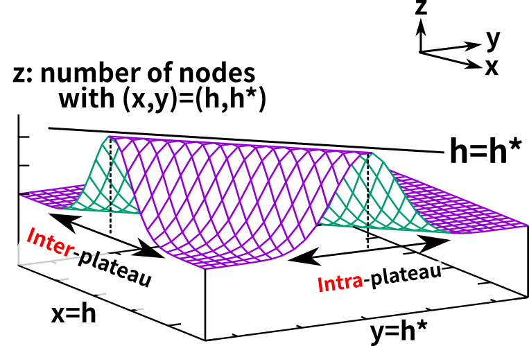
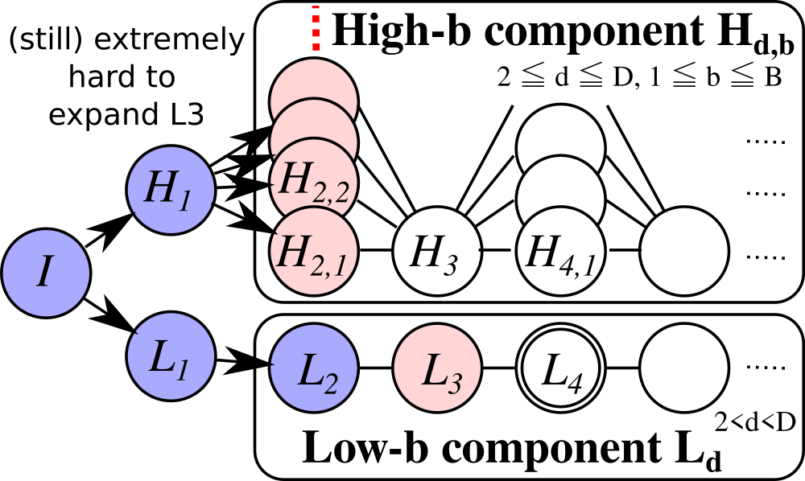

Exploration Among and Within Plateaus in Greedy Best-First Search
Masataro Asai, Alex Fukunaga, The University of Tokyo
20min
Made by guicho2.71828 (Masataro Asai)
1 Summary: Analyse Diversification in Greedy Best First Search and propose a new method
- Diversification = Exploration = unbiasing the search
- New method highlight: First effective Fractal-based algorithm ever!
2 Search Diversification
2.1 Search Diversification
2.2 Search Diversification
2.3 Search Diversification
2.4 Search Diversification
2.5 Search Diversification
An art of How NOT to trust the heuristic function and still perform effectively?
3 Preliminaries
- Search algorithm sorting strategy [S1, S2 …, ＊]
- the sorting key for OPEN list (lexcographical order)
- Default strategy
＊ - FIFO (queue), LIFO (stack) or Random; Exists for every OPEN-list
- Plateau
- Nodes that are tied with
＊ - Type-based bucket <T1, T2 …> (Xie14)
- Random selection from buckets with key values e.g. $\langle g,h\rangle$
- Alternation Queue alt(Q1,Q2…) (Roger AAAI10)
- Alternates several OPEN lists
4 Background
There are a bunch of search diversification approaches
- Diverse BFS (Imai, AAAI11) (Much more complicated)
- Monte-Carlo Random Walk (MRW) — Sometimes runs a random walk
- Epsilon-greedy GBFS — alt ([h,*], [Random]) — Sometimes runs a random search
- Type-based GBFS — alt ([h,*], <g,h>) — Sometimes runs a depth-balanced search
- GBFS-LE (local expansion) — Runs a randomized search when local minima is detected
- GBFS-LS (local search), GBFS-MRW
We need a cleaner, less ad-hoc way
to understand their behavior.
5 Traditional Understanding : Heuristic Error
\[ \text{Error} = |h - h^*| \]
$h$: heuristic value, $h^*$: perfect heuristic
$h>h^*$: Overestimation, $h<h^*$: Underestimation
- Is this view sufficient?
5.1 Heuristic Error
This is a plot of the number of the nodes against heuristic value an the perfect heuristic value, under a hypothetical heuristic function.
5.2 Heuristic Error
As you can see, the nodes that are behind the peak of this plot is the nodes that are underestimated, and those that are in front of the peak is those which are overestimated. We assume inadmissible heuristics.
5.3 Heuristic Error is 2-dimensional
however, if we look at the slice of this plot at the x-axis and the y-axis, you would notice that this view is too simplistic. The errors between the heuristic value and the perfect heuristic is actually distributed along two orthogonal axes.
5.4 Inter-plateau error

We gave them the separate names: The first one, along heuristic axis, is called inter-plateau error.
5.5 Intra-plateau error

And the error along the h* axis is called intra-plateau error. Since these errors are in the orthogonal axes, they should be treated separately.
5.6 Inter-plateau error & diversification
- The smallest $h^*$may have high $h$ (inter-plateau error)
- Selecting the minimum $h$is not always good
- Diversifies the next $h$to expand
- DBFS, Type-GBFS, $ε$-greedy
In particular, inte-plateau error should be treated by inter-plateau diversification. It is a method whose intuition is as follows:
5.7 Intra-plateau error & diversification
- The smallest $h$may have high $h^*$ (intra-plateau error)
- Deterministic Tiebreaking (e.g. FIFO/LIFO) may keep expanding high-$h^*$
- Randomize the search within h-plateau so that we (hopefully) expand a low $h^*$node
GBFS-LE has mixed effect; Local expansion is unrestricted
5.8 Let's show!
- IPC11, IPC14 (duplicated domains are excluded), 5min, 4GB
- Important: Use the same diversification method for inter-vs-intra
- The cloest we can find: Type-GBFS (inter) vs RandomDepth Tiebreaking (intra)
- Intra-plateau diversification == randomized tie breaking
- Type GBFS — Randomize <g,h>
- RandomDepth — Randomize <d> within plateau
- d ≡ number of steps from the nearest ancestor w/ the same h
- g, h, d are all depth-related metrics
5.9 Intra-vs-Inter are orthogonal & complementary
- hd (RandomDepth Tiebreaking)
- Randomize <d> in plateau
- hD (Type GBFS)
- Randomize <g,h>
- hdD
- RandomDepth + Type GBFS
Results:
- Different domains require different diversification
- With both modes enabled, effects combine
- Take-home message: Whenever you have a diversification method, use it for both modes!
6 What's next?
Type GBFS: Randomize <g,h>
RandomDepth: Randomize <d> within plateau
d ≡ number of steps from the nearest ancestor w/ the same h
g, h, d are all depth-related metrics
- Let's diversify the width!
7 Pathological case for all diversification methods
7.1 FIFO (Breadth-first)
7.2 FIFO (Breadth-first)
7.3 FIFO (Breadth-first)
7.4 LIFO (Depth-first)

7.5 LIFO (Depth-first)
7.6 LIFO (Depth-first)
7.7 Random
7.8 Random

7.9 Random-Depth
7.10 Random-Depth

8 Bond Invasion Percolation (1983)
- A well-known fractal structure
- Distribution of fluid slowly invading a porous media
- e.g., water replacing the oil in a porous rock
- Application: oil reservoir mining
8.1 Physics people use the different term

Bond == Edge
Site == Node
8.2 Generation of BIP (blind search method)
Shown (Barabasi 96) to be the same algorithm as Prim's method for Minimum Spanning Tree (Prim '57)
push(init, OPEN, 0) while (s = pop(OPEN)); do mark(s) # mark as visited for (edge,t) in expand(s); do # an edge & successor t (unmarked ones only) # Each edge has a value if value(edge) is unset ; then value(edge) = random() # assign a random value fi push(t, OPEN, value(edge)) # insert done done
- IMPORTANT: The random value is fixed/memoised on the edge (never reassigned)
8.3 The embankment effect of fixed random edge value
- Embankment : A region surrounded by high-valued edges preventing the invasion
- Fixation of random values maintains the fractal structure
- BIP != Random heuristics (reassigns a new value = break the embankment)
8.4 BIP avoids the pathological behavior
8.5 BIP avoids the pathological behavior
8.6 BIP avoids the pathological behavior

8.7 BIP avoids the pathological behavior
9 Evaluation
- hb : intra-plateau (by [h, BIP, *])
- hB : inter-plateau (by alt ([BIP], [h,*]))
- hbB : both (by alt ([BIP], [h,BIP,*]) )
- hdD : RandomDepth + Type GBFS
- Inter/intra orthogonality was observed again
- vs hdD (depth-based diversifications): competitive results
- Improvements in different domains
- hdD diversifies wrto depth, hbB diversifies wrto width
9.1 Blind search characteristics: reduces the search width
Matches our description on pathological cases
9.2 VS. State-of-the-Art
- db2 DB : Alternates D,B for inter-plateau ; d,b for intra-plateau
- Because depth (d,D) and width (b,B) has the different effects
- Effects mostly combine and improved LAMA
10 Extra Discussion: BWFS and GBFS-W in (Lipovetzky AAAI17)
Results obtained from (Lipovetzky AAAI17)
| GBFS | GBFS-W | BFWS | GBFS | GBFS-W | BFWS | |
|---|---|---|---|---|---|---|
| (hadd) | (hadd) | (hadd) | (hff) | (hff) | (hff) | |
| barm | 0 | 0 | 16 | 0 | 0 | 10 |
| caved | 5 | 6 | 6 | 6 | 6 | 5 |
| child | 0 | 0 | 0 | 0 | 0 | 0 |
| cityc | 0 | 6 | 6 | 0 | 4 | 5 |
| floor | 2 | 2 | 2 | 2 | 2 | 2 |
| GED | 0 | 10 | 16 | 16 | 13 | 18 |
| hikin | 8 | 7 | 8 | 2 | 7 | 9 |
| maint | 16 | 16 | 16 | 11 | 16 | 11 |
| opens | 0 | 0 | 0 | 5 | 0 | 5 |
| park | 0 | 0 | 0 | 0 | 0 | 0 |
| tetri | 1 | 9 | 3 | 1 | 9 | 1 |
| thoug | 13 | 9 | 20 | 12 | 11 | 18 |
| trans | 2 | 5 | 6 | 0 | 0 | 0 |
| visit | 0 | 8 | 1 | 0 | 20 | 20 |
- GBFS-W is intra-plateau
- BFWS is inter-plateau [w,h]
- Improvements in different domains
- Effects are (mostly) orthogonal
- Effects are expected to combine with both enabled.
- Benefit of understanding the diversification !!
Difference between BIP and IW : IW assumes propositional states, BIP does not
11 Conclusion
- Two modes of diversification — previous methods are inter-only / mixture of two, no cleanly separated evaluation
- Take-home message: Whenever you have a diversification method, use it for both modes !!
- Fractal-based BIP diversification for reducing the search width
- Take-home message: Fractals have a potential !!
Future work: More fractals as search algorithms !
- DLA (Diffusion Limited Aggregation)
- BA (Ballistic Aggregation)
- CCA (Cluster-Cluster Aggregation)
- Thank you for listening!